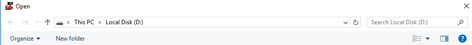
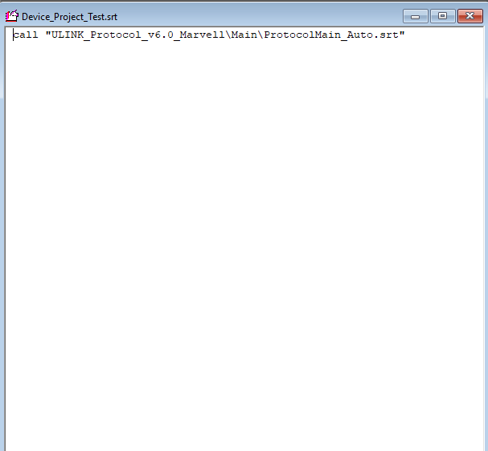

import os import sys from datetime import timedelta from datetime import datetime def FindRecentFolder(folder): lists = os.listdir(folder) #List all folder in protocol directories and return the list. test_dir = folder print("test dir is {}".format(test_dir)) lists.sort(key=lambda fn:os.path.getmtime(test_dir + '\\' + fn)) #According time to sort the element in lists. file_path = os.path.join(test_dir, lists[-1]) return file_path doubleClick() wait(10) doubleClick() wait() click(Pattern().similar(0.90)) click() exists() doubleClick() T2_folder = sys.argv[1] T3_folder = sys.argv[2] wait(180) T2_recent_folder = FindRecentFolder(T2_folder) print("T2 recent folder is {}".format(T2_recent_folder)) wait_until = datetime.now() + timedelta(hours=int(1)) while 1: if len(os.listdir(T2_recent_folder)) >= 30: print(len(os.listdir(T2_recent_folder))) break elif wait_until < datetime.now(): print("timeout") break wait(180) T3_recent_folder = FindRecentFolder(T3_folder) print("T3 recent folder is {}".format(T3_recent_folder)) while 1: if len(os.listdir(T3_recent_folder)) >= 34: print(len(os.listdir(T3_recent_folder))) break elif wait_until < datetime.now(): print("timeout") break